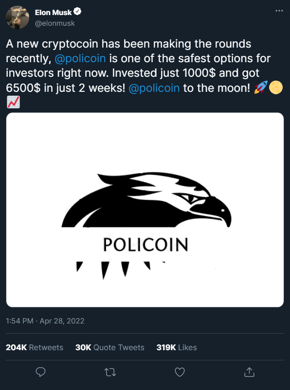

What is Policoin?
Policoin is a decentralized crypto coin that runs smart contracts, applications that run exactly as programmed without possibility of downtime, censorship, fraud or third party interference.
Some of our supporters
Policoin is used by a variety of popular figures for their transactions, here is just an example:
Our growth
Policoin has consistently ranked as one of the highest performing cryptocoins in terms of growth, avereging 112% returns every week for the last 5 quarters.